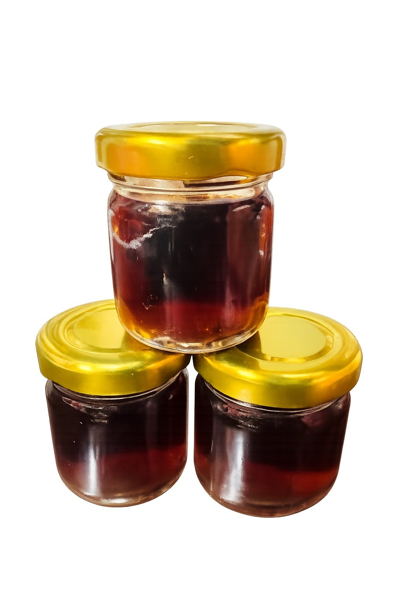

規格
30cc／玻璃瓶

直接回答
30cc／玻璃瓶
水、鹿角萃取物、龜板萃取物、枸杞、紅棗、黃耆、粉光蔘
想方便即飲、外出攜帶或先從小規格開始的人
使用方式
保存方式
比較重點
30cc適合小瓶體驗、外出與工作空檔；180cc容量較完整，適合想一次安排一份的人。兩者主要差異在容量與使用情境。
常見問題
先看規格、使用方式與保存；價格與活動請由官方 LINE 確認。
不需要，開瓶即可飲用，也可依個人習慣溫熱後飲用。
適合第一次了解、外出攜帶、工作空檔或想從小規格開始的人。
建議開瓶後儘速飲用完畢。
資料更新：2026-07-08